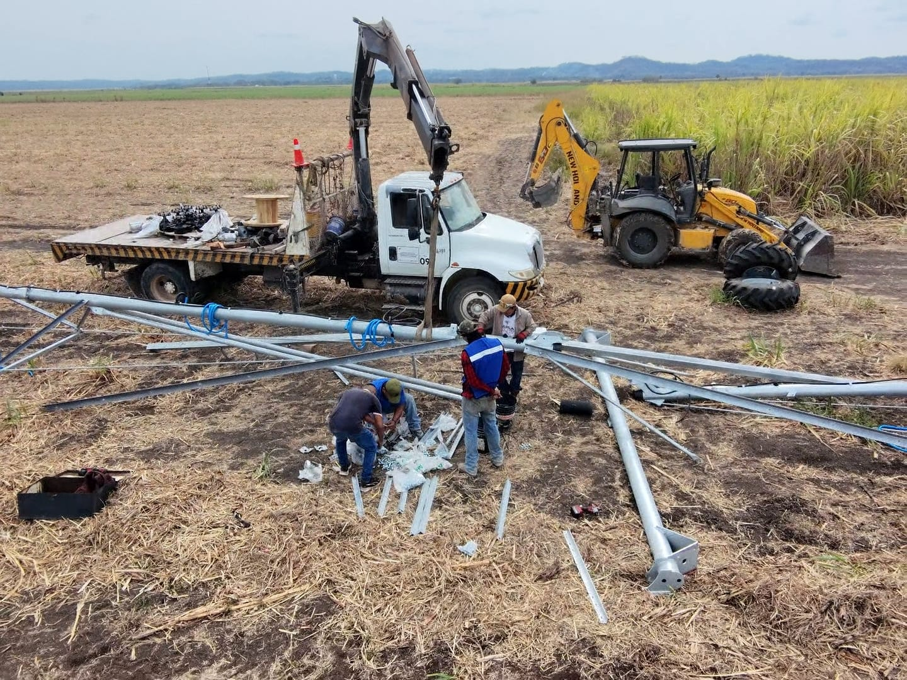
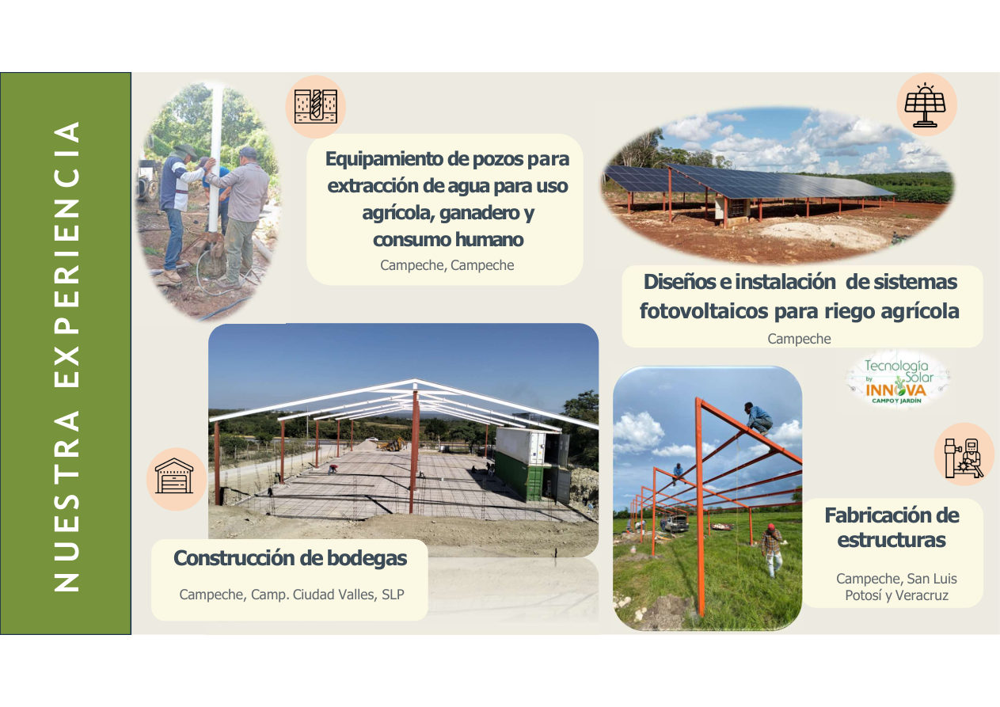
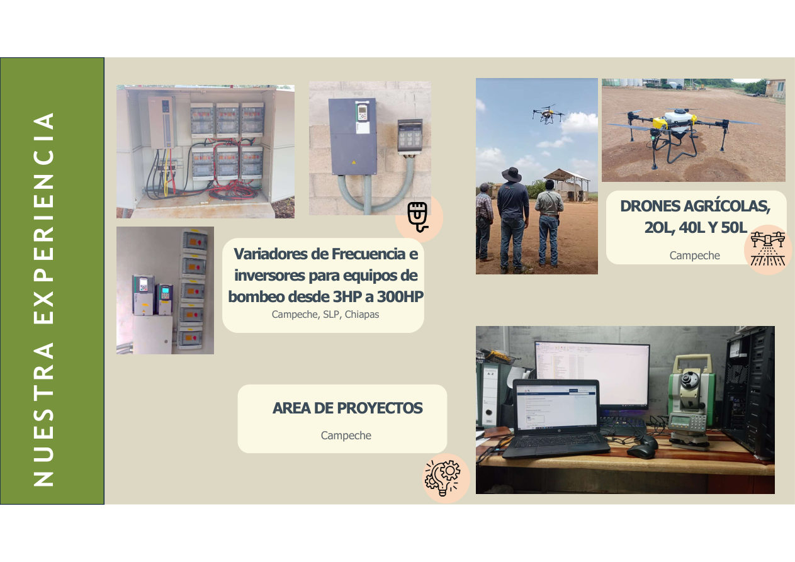
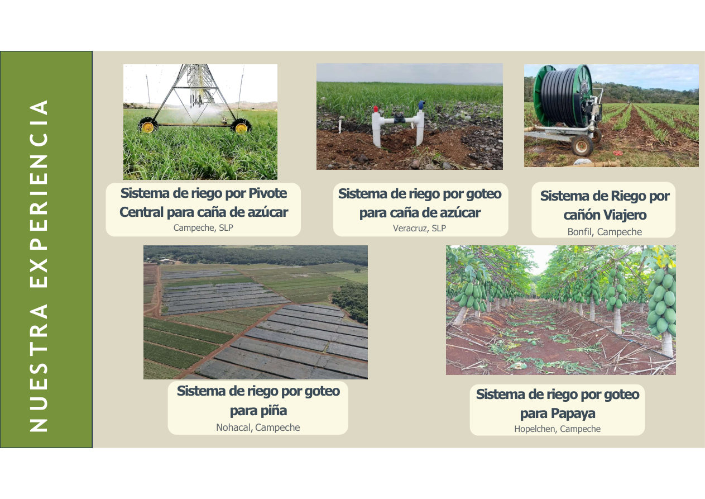

💧
Agrícola
- Equipamiento de pozos profundos
- Bombas sumergibles, centrífugas y turbina vertical
- Sistemas de riego, invernaderos y casa sombra
- Drones agrícolas
- Sistemas fotovoltaicos y fertirrigación
- Proyectos llave en mano
INNOVA CAMPO Y JARDÍN S. DE R.L. DE C.V.
Diseño, suministro e instalación de sistemas de riego, bombeo, energía solar, infraestructura y soluciones para el sector agrícola e industrial.
NUESTRA EMPRESA
Innova Campo y Jardín inició operaciones en agosto de 2016, a partir de las necesidades observadas en la industria de la construcción y el campo agrícola.
Nuestro enfoque es ofrecer soluciones con buen servicio, resultados, precio e innovación, manteniendo una filosofía de crecimiento y mejora constante.

NUESTROS SERVICIOS
Atendemos necesidades agrícolas, industriales y residenciales.
MATERIALES E INSUMOS
NUESTRA EXPERIENCIA
Principalmente en Campeche, San Luis Potosí, Veracruz y otros proyectos en el sureste.



COBERTURA
CONTÁCTANOS
Solicita información sobre productos, servicios, sistemas de riego, bombeo, energía solar o proyectos integrales.